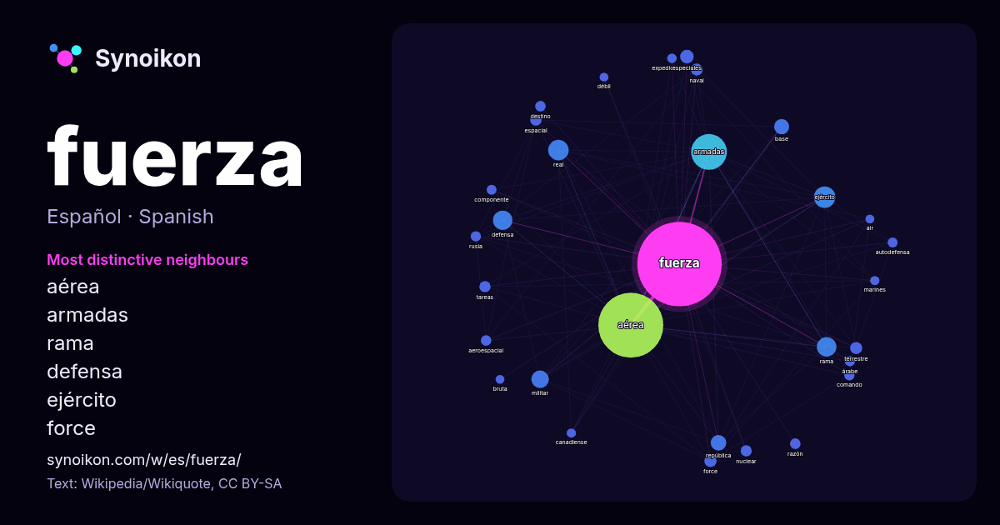

Español · palabra popular
fuerza
“strength” · Las palabras encontradas a su alrededor en 1703 apariciones de Wikipedia, Wikiquote.

Vecinos más característicos
- aérea 439×
- armadas 121×
- rama 41×
- defensa 30×
- ejército 24×
- force 22×
- real 19×
- terrestre 18×
- aeroespacial 18×
- naval 17×
- nuclear 17×
- espacial 16×
- autodefensa 16×
- militar 15×
- expedicionaria 15×
- comando 15×
- tareas 14×
- base 14×
- república 13×
- destino 13×
× = cuántas veces más que en el texto general de Wikipedia.
Vecinos más frecuentes
- aérea 642
- armadas 195
- ejército 70
- real 64
- rama 58
- defensa 57
- militar 47
- unidos 45
- república 37
- base 35
- nacional 30
- especiales 28
- force 23
- naval 22
- terrestre 22
- tierra 21
- unidad 21
- argentina 20
- espacial 20
- nuclear 19
En contexto
- define como la fuerza necesaria para proporcionar una aceleración de 1 m/s² a un objeto de 1 kg de masa. Los conceptos relacionados con la fuerza incluyen: Wikipedia snippets · Fuerza
- denomina Fuerza Aeroespacial, debido a una reforma constitucional presentada en el 2024, la cual modificó la Constitución de 1991, denominando a la Fuerza Aérea Wikipedia snippets · Fuerza Aérea Colombiana
- el 1 de agosto de 2015 con la fusión de la Fuerza Aérea (VVS), la Fuerza de Defensa Aérea (PVO) y las Fuerzas Espaciales (VK). Los orígenes de la aviación Wikipedia snippets · Fuerza Aérea de Rusia
- La Fuerza Aérea Turca (en turco: Türk Hava Kuvvetleri) es la fuerza aérea de las Fuerzas Armadas de Turquía. Es una de las fuerzas aéreas más antiguas Wikipedia snippets · Fuerza Aérea Turca
- VVS) más conocida en español como Fuerza Aérea Soviética, era la designación oficial de una de las ramas de las fuerzas aéreas de la Unión Soviética, la Wikipedia snippets · Fuerza Aérea Soviética
- militar importante crearon fuerzas aéreas independientes. La Fuerza Aérea Sudafricana se creó el 1 de febrero de 1920 y la Real Fuerza Aérea Australiana poco Wikipedia snippets · Fuerza aérea
- La libra-fuerza (símbolos: lbf, o lbf) es una unidad física de fuerza. Una libra-fuerza es la fuerza gravitacional ejercida sobre una masa de una libra Wikipedia snippets · Libra-fuerza
- constituyendo la más joven fuerza armada. La Fuerza Aérea se halla subordinado al presidente de la Nación como comandante en jefe de las Fuerzas Armadas. El jefe Wikipedia snippets · Fuerza Aérea Argentina
Más palabras
- agua
- arte
- bosque
- caballo
- camino
- campana
- canción
- ciencia
- ciudad
- clima
- comida
- corazón
- desierto
- dinero
- dios
- espejo
- estrella
- familia
- gato
- historia
- invierno
- isla
- jardín
- lengua
- lluvia
- madre
- mapa
- miel
- montaña
- muerte
- naturaleza
- oro
- otoño
- pan
- perro
- puente
- reloj
- sal
- salud
- silencio
- sombra
- tiempo
- tormenta
- trabajo
- tren
- té
- verano
- verdad
- vida
Precalculado el 2026-10-09 con los ajustes predeterminados (±5 palabras, corpus mediano). El mapa interactivo puede actualizarlo con datos en vivo.
Interfaz traducida automáticamente; se agradecen correcciones.